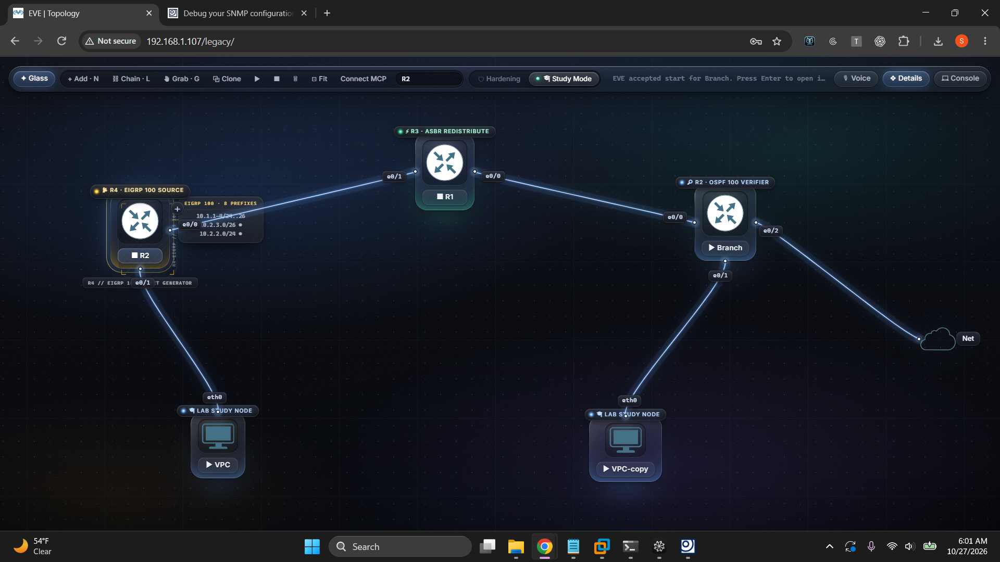
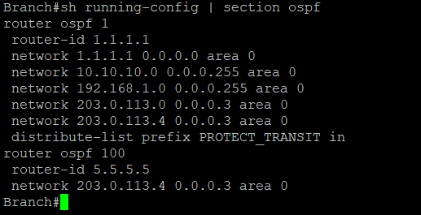
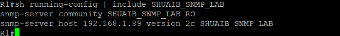
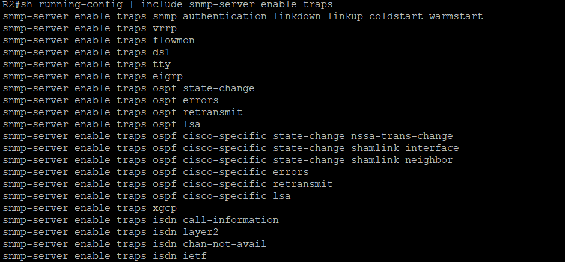
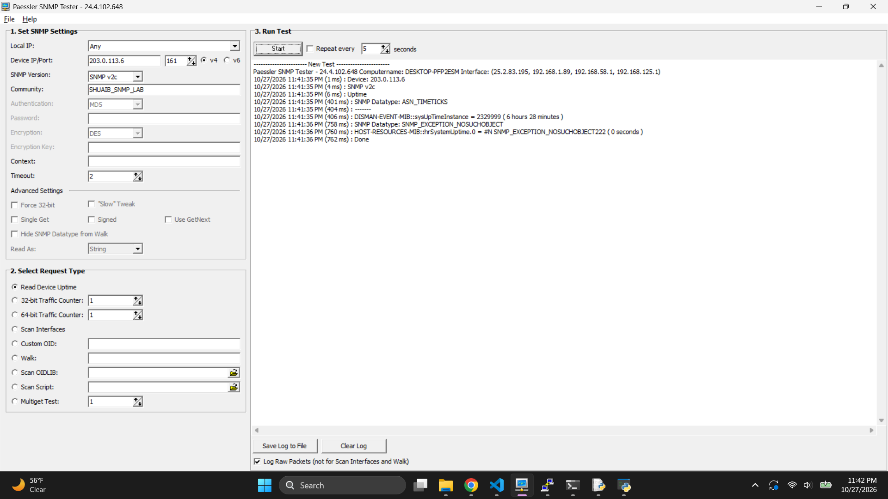
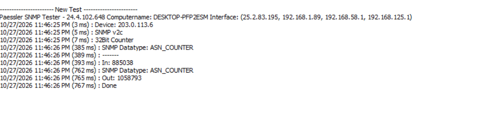
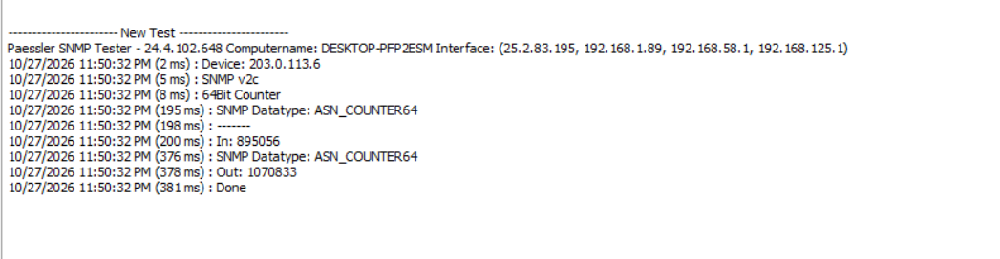

Objective
Prove the complete SNMP monitoring chain, from agent to raw log.
A three-router EVE-NG topology (EIGRP source → redistribution boundary → OSPF verifier) gets SNMP v2c and v3 enabled. A Windows management station at 192.168.1.89 then polls the routers with Paessler SNMP Tester, and the raw request/response log is decoded OID by OID.

Layer 3 addressing
| R1 | Ethernet0/0 = 203.0.113.6, Ethernet0/1 = 203.0.113.13, Loopback0 = 3.3.3.3 |
|---|---|
| R2 | Ethernet0/0 = 203.0.113.14, Ethernet0/1 = 203.0.113.10, Loopback0 = 4.4.4.4 |
| Branch | Ethernet0/0 = 203.0.113.5, Ethernet0/1 = 203.0.113.1, Ethernet0/2 = 192.168.1.88 (LAN), Loopback0 = 1.1.1.1 |
| Monitor | Windows host on 192.168.1.89/24 — polls R1 at 203.0.113.6 through Branch's LAN bridge |

Agent configuration
Read-only community, trap host, and trap enablement
All three routers share the same baseline: a read-only community and a v2c trap host pointed at the management station. R2 additionally enables a broad trap set covering link up/down, authentication failures, EIGRP and OSPF events.

snmp-server community SHUAIB_SNMP_LAB RO plus snmp-server host 192.168.1.89 version 2c — identical on R2 and Branch.
Test 1
SNMPv3 uptime poll — authenticated and encrypted
The tester polls R1 with SNMPv3 (MD5 authentication, DES privacy). The agent returns a real decrypted uptime of 2329999 timeticks (≈ 6 h 28 m), proving the v3 security chain works end to end. A second probe of the classic sysUpTime.0 instance answers noSuchObject — an agent-side MIB quirk, not a connectivity failure.

Tests 2 and 3
32-bit and 64-bit traffic counters
Interface byte counters are cumulative odometers, not rates: a monitor computes bandwidth by polling twice and dividing the delta by time. The 32-bit counters (ifInOctets/ifOutOctets) wrap at ~4.29 GB; the 64-bit IF-MIB counters remove that ceiling.
| 32-bit test | In: 885038, Out: 1058793 (ASN_COUNTER) |
|---|---|
| 64-bit test | In: 889056, Out: 1070833 (ASN_COUNTER64) — values still climbing between tests |


Log analysis
Decoding the interface-scan log
The full scan walks R1's MIB-II and IF-MIB tables: sysUpTime, ifNumber (8 interfaces), ifName via GETBULK, 64-bit octet counters, ifOperStatus, and ifAlias. All ~40 operations return Status=0 — zero timeouts.
- Interface descriptions ("Q1 R1 to Branch", "Q1 R1 to R2") surface through
ifAlias, mapping ports to topology in any NMS. - Null0 has no 64-bit counters (
NOSUCHINSTANCE), so the tester correctly falls back to 32-bit for that virtual interface. - GETBULK walking is a v2c capability impossible in v1 — a practical reason monitors prefer v2c for table walks.
- Counter values grow consistently between the standalone tests and the scan minutes later, confirming live counters.
Outcome
| SNMPv2c polling | Working — community read-only, zero request errors |
|---|---|
| SNMPv3 MD5 + DES | Working — authenticated, encrypted read |
| Traps | Configured toward 192.168.1.89 |
| Interface discovery | 8/8 interfaces enumerated with counters and aliases |